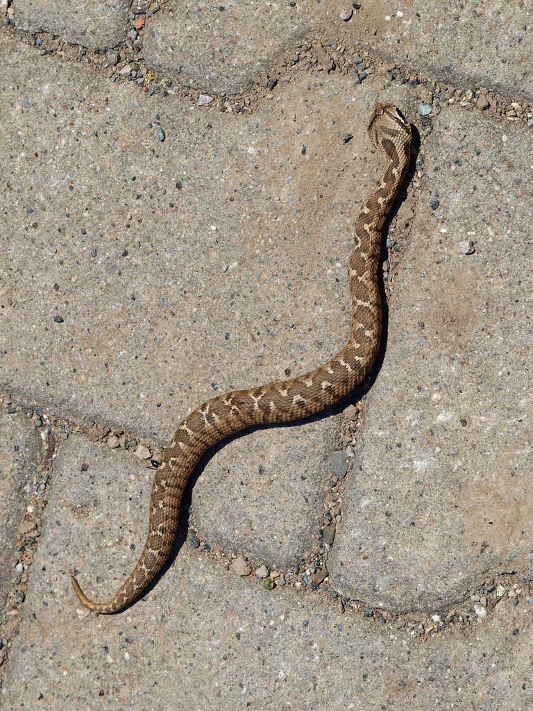

Şeritli engerek, Türkiye'nin zehirli engerek türlerinden biridir. Genellikle taşlık ve kayalık alanlarda yaşayan bu tür, avcılarına karşı kamuflaj yeteneği ile bilinir. Tür, bölgedeki ekolojik dengenin korunması açısından kritik bir rol oynamaktadır.
Haritaya Geri Dön